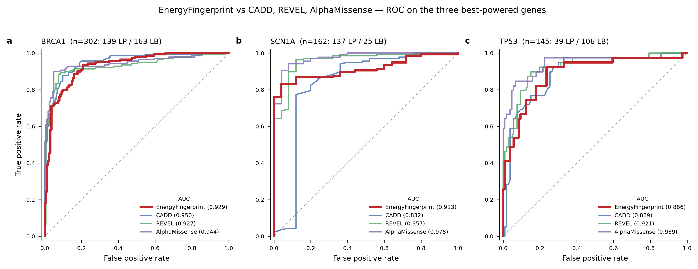

La pregunta que faltaba
Cuando presentamos EnergyFingerprint en junio, la pregunta obvia era: ¿cómo se compara con los predictores establecidos? CADD, REVEL y AlphaMissense son el estándar de la industria — entrenados en cientos de miles de variantes, decenas de miles de genes, con anotaciones funcionales masivas. EnergyFingerprint es un modelo por gen de ~228K parámetros que usa solo dos señales: la física del mRNA y la evolución de la proteína.
Ahora tenemos la respuesta cuantitativa.
Metodología: comparación justa
La comparativa usa el subconjunto "Likely" de ClinVar (Likely pathogenic vs Likely benign) — variantes con clasificación clínica consistente. Para cada variante, obtuvimos las puntuaciones de CADD, REVEL y AlphaMissense vía dbNSFP (myvariant.info, GRCh38). Cobertura: CADD 99.9%, REVEL 99.1%, AlphaMissense 98.6%.
Todas las comparaciones usan el subconjunto de caso completo — solo variantes donde los cuatro predictores tienen puntuación. Así cada comparación es pareada sobre las mismas variantes. El test estadístico es DeLong para curvas ROC correlacionadas, y la inferencia combinada usa meta-análisis de varianza inversa estratificado por gen — no la concatenación ingenua de puntuaciones que produciría una paradoja de Simpson.
¿Por qué no concatenar puntuaciones? EnergyFingerprint entrena un modelo separado por gen. Las puntuaciones de BRCA1 y las de SCN1A no están en la misma escala. Concatenarlas y calcular un AUC global penaliza artificialmente a EF. El meta-análisis estratificado es la prueba correcta: combina la evidencia de cada gen ponderando por precisión.
Resultados: a 2-4% de distancia
| Gen | n | EF | CADD | REVEL | AlphaMissense |
|---|---|---|---|---|---|
| BRCA1 | 302 | 0.929 | 0.950 | 0.927 | 0.944 |
| TP53 | 145 | 0.886 | 0.889 | 0.921 | 0.939 |
| PTEN | 111 | 0.898 | 0.996 | 1.000 | 0.999 |
| PALB2 | 48 | 0.902 | 1.000 | 0.880 | 0.957 |
| CFTR | 103 | 0.925 | 1.000 | 0.991 | 0.966 |
| HBB | 34 | 0.586 | 0.751 | 0.777 | 0.762 |
| SCN1A | 162 | 0.913 | 0.832 | 0.957 | 0.975 |
| Media pond. | 905 | 0.901 | 0.926 | 0.940 | 0.952 |
MECP2 se excluye de la comparativa: sus 4 variantes Likely-pathogenic no tienen cobertura en REVEL ni AlphaMissense, dejando 0 positivos en el subconjunto de caso completo.
El hallazgo: SCN1A
La fila marcada en la tabla es el resultado más importante de la comparativa. En SCN1A — un canal de sodio dependiente de voltaje con 24 segmentos transmembrana — EnergyFingerprint obtiene 0.913 frente al 0.832 de CADD. Una diferencia de +0.081 AUC a favor de un modelo de 228K parámetros frente a un predictor que integra docenas de anotaciones genómicas.
En SCN1A, la física del mRNA captura algo que las anotaciones genómicas no ven. Los canales iónicos de membrana tienen una gramática termodinámica propia: barreras de ΔG que pausan al ribosoma para el plegamiento cotraduccional acoplado a la maquinaria de inserción en membrana.
Esto no es un accidente estadístico. Es coherente con el gradiente de transferibilidad que describimos en junio: las proteínas de membrana transmembrana tienen perfiles ΔG altamente informativos, con restricciones termodinámicas que los predictores a nivel de proteína no modelan.

Meta-análisis: el veredicto estadístico
El meta-análisis estratificado por gen (varianza inversa, 7 genes) resume la comparación:
| Comparación | ΔAUC combinado | p | p (BH adj.) | Interpretación |
|---|---|---|---|---|
| EF vs CADD | -0.024 | 0.048 | 0.048 | Estadísticamente a la par |
| EF vs REVEL | -0.028 | 0.022 | 0.033 | Marginalmente detrás |
| EF vs AlphaMissense | -0.040 | 0.0003 | 0.0009 | Detrás |
EnergyFingerprint queda a 2.4 puntos de CADD, 2.8 puntos de REVEL y 4 puntos de AlphaMissense en AUC medio. Con ~228K parámetros por gen frente a predictores entrenados en conjuntos de datos masivos multi-gen, el resultado demuestra que la señal termodinámica del mRNA es competitiva como dimensión independiente.
Otros resultados destacados
- BRCA1: EF (0.929) iguala a REVEL (0.927) — DeLong p = 0.90, indistinguibles estadísticamente.
- PALB2: EF (0.902) supera a REVEL (0.880), aunque con solo 2 variantes patogénicas la potencia es limitada.
- HBB: El punto débil de EF (0.586). La hemoglobina es una proteína atípica — muy pequeña, sin regiones de membrana ni estructura compleja. Coherente con el gradiente de transferibilidad: las globinas tienen una presión termodinámica débil.
Qué significa para el diagnóstico
La comparativa confirma que EnergyFingerprint aporta una señal ortogonal — es decir, información independiente y complementaria — a los predictores existentes. Decimos "ortogonal" porque la señal termodinámica del mRNA y las señales de conservación evolutiva que usan CADD, REVEL y AlphaMissense capturan aspectos distintos de la biología: son dimensiones perpendiculares, no redundantes. EnergyFingerprint no es un sustituto, sino un complemento que mide lo que los otros no ven. En ciertos contextos — canales iónicos de membrana, proteínas con restricciones de plegamiento cotraduccional — esa dimensión termodinámica domina.
Para un laboratorio de diagnóstico genético, el valor está en la combinación: añadir EF al panel de predictores existentes aportaría señal adicional precisamente en los genes donde los predictores actuales son más débiles.
Y para la investigación, el resultado de SCN1A abre una puerta: si la física del mRNA explica mejor las variantes en canales iónicos, ¿qué otros genes de membrana se beneficiarían de un predictor termodinámico? El zero-shot cruzado SCN1A↔CFTR es el siguiente experimento.